| Platform
Changes |
| Eclipse on Cocoa |
32 and 64-bit OSX Cocoa have joined the line-up of supported configurations for which SWT and Eclipse are routinely
built. Cocoa is now a first class Eclipse configuration, including advanced libraries such as OpenGL for SWT. Cocoa replaces Carbon
as the primary toolkit for Eclipse and SWT on Mac.
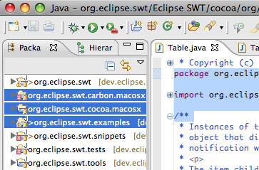
|
| Solaris x86 |
Solaris x86 has joined the line-up of supported configurations for which SWT and Eclipse are routinely built.
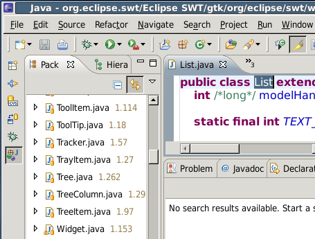
|
| Eclipse on s390 and s390x |
It's time to dust off that old mainframe in your basement, because Eclipse has
arrived on the s390 and s390x architectures. This new port is still early access, so give
it a spin and report any problems you encounter in bugzilla.
|
| Customize menus and toolbars |
The customize perspective dialog has been improved and
extended with new functionality. It can now be used to hide or show individual menu
or toolbar items.
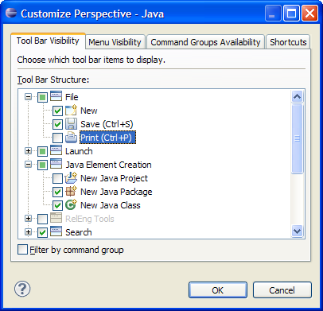
|
| Multi-instance Properties view |
You can now pin the Properties view to a given selection.
This allows you to see the properties of a particular selection while
having the freedom to select alternate items.
You can now create new instances of the Properties view from an existing
one. The existing one will be pinned to the contents it is currently
displaying and the new view will be set to follow the workbench's
selection.
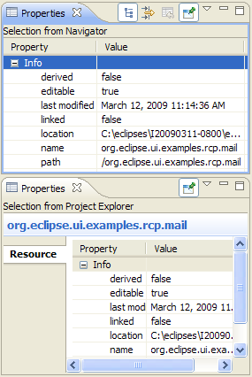
|
| Compare Editor enhancements |
New features have been added to the Compare Editor:
- The Go to Line action added to the context menu allows for rapid navigation
- The current text selection will be used to populate the filter field of the Open Type and Open Resource dialogs
- The current line in the viewers are now highlighted
- Background and foreground color preferences are now honored
- The Set Encoding... action has been added to the context menu.
This allows you to change the encoding of each side of the comparison
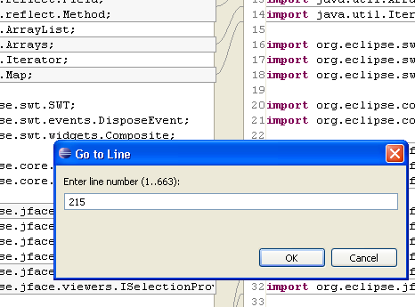
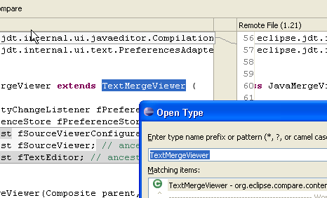
|
| New Compare With Other Resource dialog |
A new compare dialog has been added to help you
compare files and folders from various sources. After opening the dialog, you can drag files and
folders to be compared from other workbench views into the dialog.
The dialog can be opened by selecting Compare With > Other Resource...
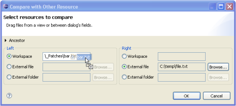 |
| Compare Word documents |
Comparing Word document changes in Eclipse now
uses the Word compare support to show you the changes as revisions.
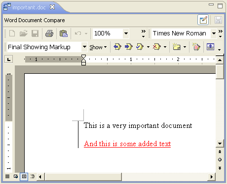 |
| Switching compare viewers |
The Compare Editor allows you to switch to
optional merge viewers available for the compared content. For instance, while comparing
two Java files, you can use the simple Text Compare viewer instead of the default Java
Source Compare.
You can also switch between content-specific merge viewers;
for example when an alternative Java compare viewer is available, you can use it instead of the default one.
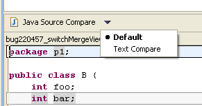
|
|
Open Resource dialog allows choice of editor
|
The Open Resource dialog now allows you to open files with the the editor of your choice.
You can either choose the editor from the Open With context menu or
use the drop-down menu besides the Open button.

|
|
Switch editors and multi-page editors
|
Switching between open editors and multiple editor pages has been streamlined.
Ctrl+PageDown and Ctrl+PageUp now always activate the next or
previous editor tab, even in multi-page editors. To switch between pages of a multi-page
editor, use Alt+PageDown and Alt+PageUp.
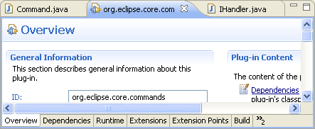
|
| Improved Network Connections page |
The Network Connection page has been changed to better show the current
proxy configuration. Now if you go to Preferences > General > Network Connections,
you are able to see and change Eclipse proxy settings as well as see
settings provided by the operating system. If you want to use your browser
or Gnome settings, or you have your proxy configured using environmental variables on Linux,
you can see them all in this new UI.
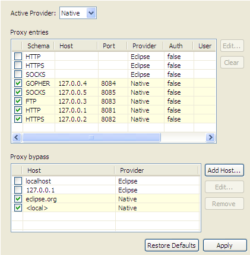
|
| Workspaces preference page |
A new preference page supports managing the startup prompt to select a
workspace: General > Startup and Shutdown > Workspaces. You can
enable or disable the prompt altogether (this setting used to be on
General > Startup and Shutdown) and specify the maximum number of
recent workspaces to be remembered. The page also lists the recently used
workspaces and allows you to remove unwanted workspaces from that list.
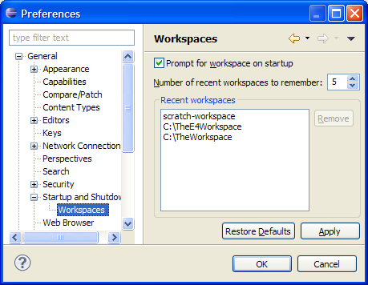 |
| Project Explorer improvements |
As a step in the campaign to bring
the Project Explorer up to parity with the Package Explorer, the
Go Into and Go To functionality has been added. You can now
go into any folder/project/etc. and have that be the only contents of the Project Explorer.
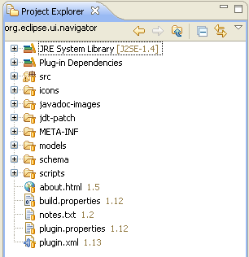
|
| Custom icons in help system |
Custom icons can be specified for books and topics in the help system using
the <tocIcon> element in the org.eclipse.help.toc extension point.
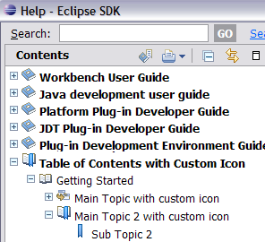 |
| Buttons to change font size in Welcome |
To improve accessibility two new buttons (a large and a small 'A') have been
added above the welcome area which can be used to increase or decrease the font size on the welcome pages.
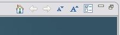 |
| About page in help system |
It is now possible to open a web page, about.html from
the help system that shows plug-in version information. This makes it possible to determine
the versions of plug-ins running in a Help infocenter. |
| Help quick search |
A search of the help system can be initiated with a
scope limited to the selected book or topic.
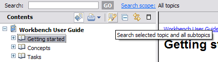
|
| Install/Update Changes |
| Software updates menu items |
New menu items have been added to the Help menu, allowing you to
invoke the most common software management tasks immediately. Instead of launching a single updates dialog and navigating pages with
action buttons, you can now perform common tasks immediately from the Help menu.
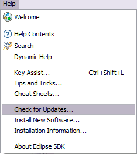
For example, you can now check for software updates in one step using Help > Check for Updates.
This menu command will check for updates (in the foreground or background depending on your
General > Always run in background preference), and launch the software updates wizard if updates are available.
|
| Installing new software |
The Available Software page has been merged into the install wizard and
can be accessed using Help > Install New Software.... The same navigation features previously
appearing in the Available Software page, such as filtering and viewing by site, category, or name,
are now on the first page of the wizard.
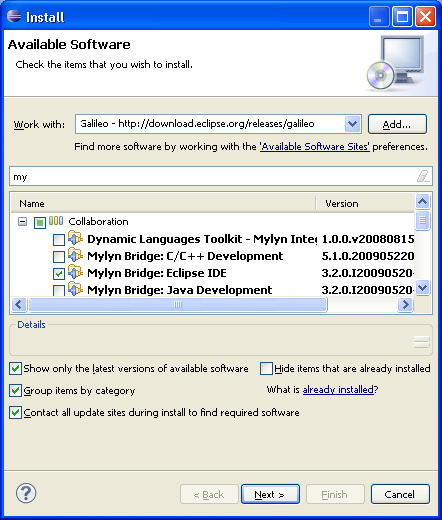
Some of the most common workflow and usability complaints have also been addressed:
- The wizard will now open immediately without waiting to connect to any update sites.
This makes the view itself much more responsive once the wizard is opened.
- A description field has been added to the page to show more information about the selected item.
- You can now change many selections at once without computing the install results on each change. Once
you've selected the items to install, the Next button will take you to the review page. If there
is an error or you otherwise want to change your selections, you can now go back and change the selections in the first
page, and the resulting changes won't be computed until you move forward again.
|
| Installing software from a new site |
The install wizard has been reorganized to make it simpler to
add a new site and install software from it. You can add a new site by typing, pasting, or
dragging a URL link into the Work with: combo box. You can also use the Add... button
to add a site. Auto-completion on names and locations is supported when typing in the Work with field,
including completion of repositories that are currently disabled.
Only the content for a newly added site will be shown, making it simpler to find
what you want to install. You can also use the combo to change the filtering of the available software by any
site. The wizard has also been streamlined by placing the links to other views closer to the
relevant information in the wizard.
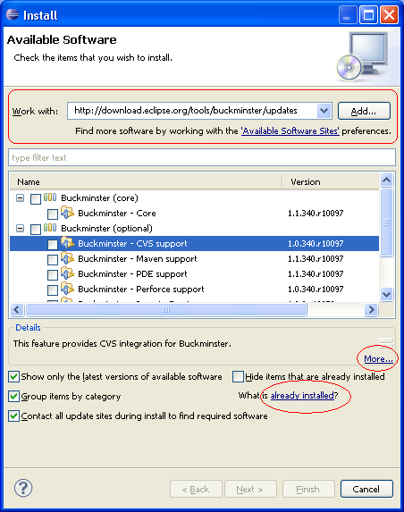
A new checkbox at the bottom of the page lets you control whether all sites will be used when
searching for the new software's requirements, or whether only the site selected will be
consulted. Previously, all sites were always used when gathering the requirements.
|
| More detail in install wizards |
The wizards for installing, updating, and uninstalling software now provide
more detailed information about the software required to complete an operation. For example, when you
install a feature, you will see a list of the other features required that will also be installed.
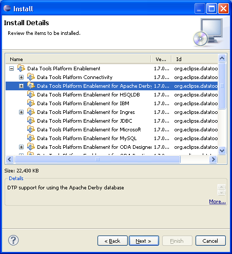
The update wizard has also been reorganized so that you can change your update selections
in a separate selection page. When available updates are shown, the wizard will open directly
on the details page.

From this page, use the wizard < Back button to see all of the possible update proposals and
change the selections.
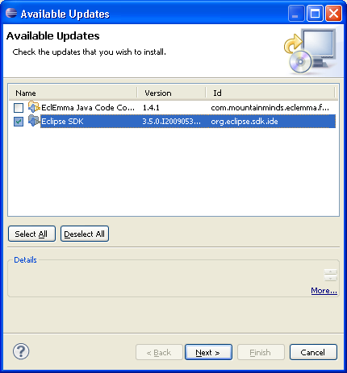
|
| Installation information now appears in About |
The Installed Software and Installation History pages
have been moved into the new Installation Details dialog. To access these pages, choose Help>About
and press the Installation Details button. In addition, you can now expand the top level items in the
Installed Software page to see what software each item requires. From the
Installation History page you can browse previous install configurations, and
Revert to previous configurations.
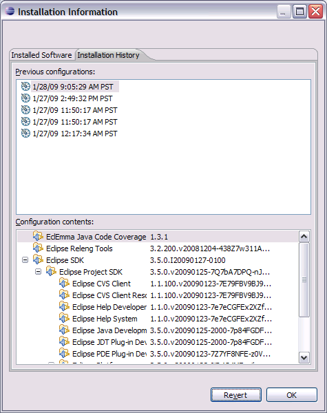
|
| Software sites preference page |
The available sites for installing and updating software are now managed from
a preference page (Preferences > Install/Update > Available Software Sites).
To find a particular site quickly, you can sort by name, location, or enablement. You can also use the filter field to filter the list of sites.
This preference page also allows you to define your own name for available
software sites. Names can be defined when adding a new site, or edited from the available
sites preference page. If you don't provide a name, the name defined by the site itself will be used.
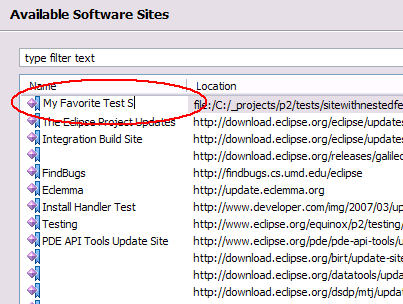
|
| Editor Changes
These changes apply to all textual editors in the SDK. |
|
Block selection mode in textual editors
|
Textual editors now support block (aka column or rectangular) selection mode:
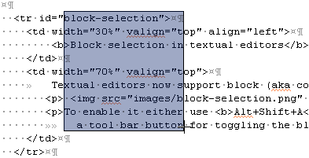
To enable it either use Alt+Shift+A or activate the 'Editor Presentation' action set to get
a tool bar button for toggling the block selection mode.
|
|
Double-click on folding line collapses the folding region
|
Double-click on the vertical folding line now collapses the folding region:
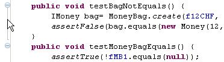
|
| Team/CVS
Changes |
| History in Tag Resources dialog |
When tagging a project you can now choose a
previously used tag.
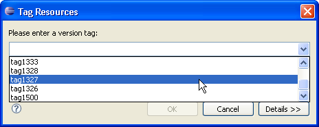 |
| Apply patch in the Synchronize
view |
You can now apply a patch directly in the Synchronize
view.
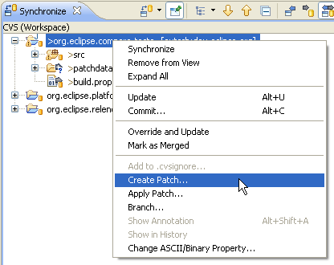 |
|
| More options for synchronization scheduling |
New options are available in the Configure Synchronize Schedule dialog.
Synchronization can be started at a specified time, run once or repeated at selected intervals.
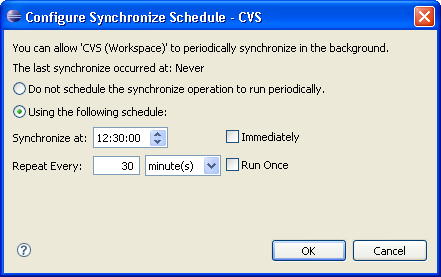 |
| Debug
Changes |
| Debug view breadcrumb |
Debug view now offers a breadcrumb
which shows the current active debug context. The breadcrumb is
activated automatically when the Debug view is resized to show only one
line of text.
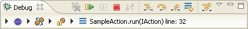
Each element in the breadcrumb can be selected and actions can
be invoked through a context menu or keyboard short cuts.
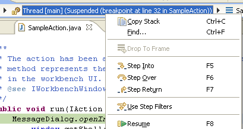
Finally, a drop-down menu allows navigating to a new
element and changing the active debug context.
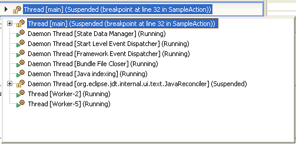
|